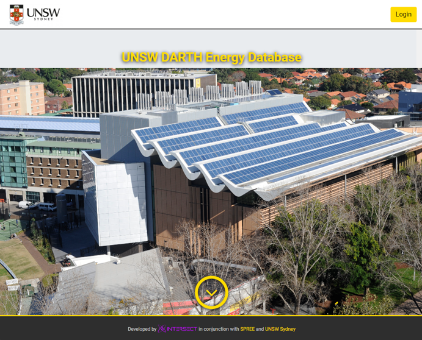
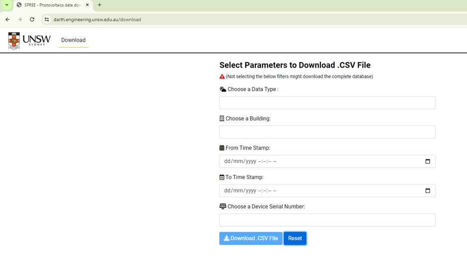
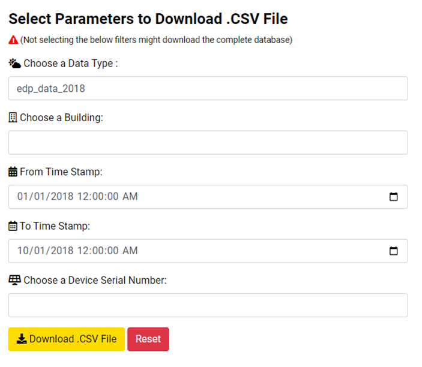
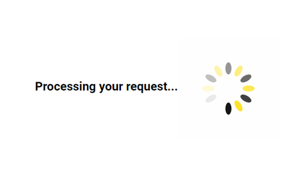
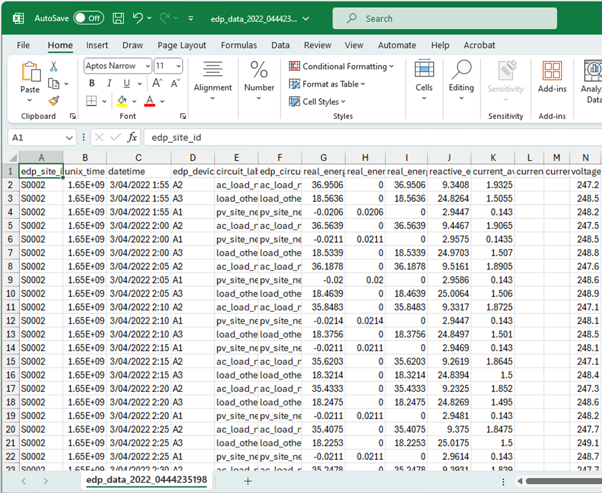

Access via Web Downloader¶
Original access to DARTH data has been through a web interface called SPREE Photovoltaics Data Downloader: https://darth.engineering.unsw.edu.au. It would suffice for many research purposes and most undergraduate projects. Any UNSW member with a valid zID can login and use this system to download the data:


The first input field in the web interface is Data Type:

Each value in Data Type is in fact the name of a data table in the DARTH database. Each dataset in DARTH corresponds to one or more data tables. Selecting a value in this dropdown will narrow the download to the data from that table.
Please note that the current implementation needs the Data Type, From Time Stamp, and To Time Stamp, to be selected before the download request can be processed. Like this:

Due to the large volume of some datasets, it is advisable to only select as small period as necessary/possible to avoid crashing the server or user’s device, especially when trying to access the bigger datasets like EDP and BOM. If data from bigger time ranges are required, it is recommended to download data from smaller time ranges and combine them offline.
When the Data Type and time filters are selected, the Download button will be activated (color will change from blue to yellow to indicate that). Clicking it will initiate the download request/process and the user will see a “Processing your request” spinner:

After a while the data will be downloaded as a CSV file:

It is worth mentioning, especially with timestamped data, that the downloaded records are not always sorted in the expected way, i.e. not completely sorted by time.